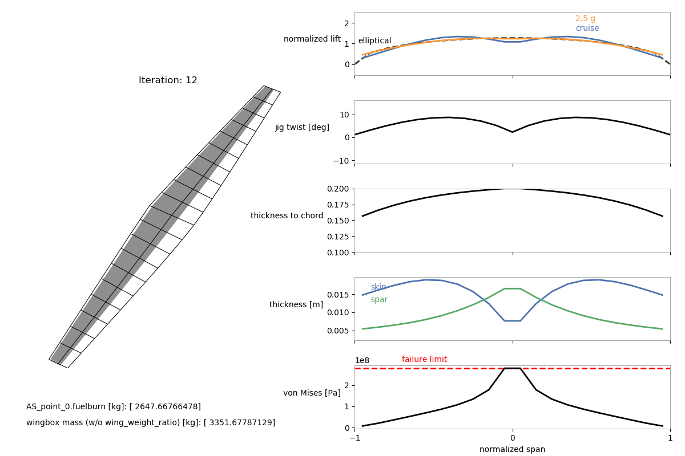

Aerostructural with wingbox (Q400)¶
This is an additional example of a multipoint aerostructural optimization with the wingbox model using a wing based on the Bombardier Q400. Here we also create a custom mesh instead of using one provided by OpenAeroStruct. Make sure you go through the Aerostructural with Wingbox Walkthrough before trying to understand this example.
"""
This example script can be used to run a multipoint aerostructural optimization
for a wing based on the Bombardier Q400 with the wingbox model.
We create a custom mesh for this wing in this script.
The fuel burn from the cruise case is the objective function and a 2.5g
maneuver case is used for the structural sizing.
After running the optimization, use the 'plot_wingbox.py' script in the utils/
directory (e.g., as 'python ../utils/plot_wingbox.py aerostruct.db' if running
from this directory) to vizualize the results.
This visualization script is based on the plot_wing.py script.
It's still a bit hacky and will probably not work as it is for other types of
cases for now.
"""
from __future__ import division, print_function
import numpy as np
from openaerostruct.geometry.utils import generate_mesh
from openaerostruct.integration.aerostruct_groups import AerostructGeometry, AerostructPoint
from openmdao.api import IndepVarComp, Problem, ScipyOptimizeDriver, SqliteRecorder, ExecComp, SqliteRecorder
from openaerostruct.structures.wingbox_fuel_vol_delta import WingboxFuelVolDelta
from openaerostruct.utils.constants import grav_constant
# Provide coordinates for a portion of an airfoil for the wingbox cross-section as an nparray with dtype=complex (to work with the complex-step approximation for derivatives).
# These should be for an airfoil with the chord scaled to 1.
# We use the 10% to 60% portion of the NASA SC2-0612 airfoil for this case
# We use the coordinates available from airfoiltools.com. Using such a large number of coordinates is not necessary.
# The first and last x-coordinates of the upper and lower surfaces must be the same
upper_x = np.array([0.1, 0.11, 0.12, 0.13, 0.14, 0.15, 0.16, 0.17, 0.18, 0.19, 0.2, 0.21, 0.22, 0.23, 0.24, 0.25, 0.26, 0.27, 0.28, 0.29, 0.3, 0.31, 0.32, 0.33, 0.34, 0.35, 0.36, 0.37, 0.38, 0.39, 0.4, 0.41, 0.42, 0.43, 0.44, 0.45, 0.46, 0.47, 0.48, 0.49, 0.5, 0.51, 0.52, 0.53, 0.54, 0.55, 0.56, 0.57, 0.58, 0.59, 0.6], dtype = 'complex128')
lower_x = np.array([0.1, 0.11, 0.12, 0.13, 0.14, 0.15, 0.16, 0.17, 0.18, 0.19, 0.2, 0.21, 0.22, 0.23, 0.24, 0.25, 0.26, 0.27, 0.28, 0.29, 0.3, 0.31, 0.32, 0.33, 0.34, 0.35, 0.36, 0.37, 0.38, 0.39, 0.4, 0.41, 0.42, 0.43, 0.44, 0.45, 0.46, 0.47, 0.48, 0.49, 0.5, 0.51, 0.52, 0.53, 0.54, 0.55, 0.56, 0.57, 0.58, 0.59, 0.6], dtype = 'complex128')
upper_y = np.array([ 0.0447, 0.046, 0.0472, 0.0484, 0.0495, 0.0505, 0.0514, 0.0523, 0.0531, 0.0538, 0.0545, 0.0551, 0.0557, 0.0563, 0.0568, 0.0573, 0.0577, 0.0581, 0.0585, 0.0588, 0.0591, 0.0593, 0.0595, 0.0597, 0.0599, 0.06, 0.0601, 0.0602, 0.0602, 0.0602, 0.0602, 0.0602, 0.0601, 0.06, 0.0599, 0.0598, 0.0596, 0.0594, 0.0592, 0.0589, 0.0586, 0.0583, 0.058, 0.0576, 0.0572, 0.0568, 0.0563, 0.0558, 0.0553, 0.0547, 0.0541], dtype = 'complex128')
lower_y = np.array([-0.0447, -0.046, -0.0473, -0.0485, -0.0496, -0.0506, -0.0515, -0.0524, -0.0532, -0.054, -0.0547, -0.0554, -0.056, -0.0565, -0.057, -0.0575, -0.0579, -0.0583, -0.0586, -0.0589, -0.0592, -0.0594, -0.0595, -0.0596, -0.0597, -0.0598, -0.0598, -0.0598, -0.0598, -0.0597, -0.0596, -0.0594, -0.0592, -0.0589, -0.0586, -0.0582, -0.0578, -0.0573, -0.0567, -0.0561, -0.0554, -0.0546, -0.0538, -0.0529, -0.0519, -0.0509, -0.0497, -0.0485, -0.0472, -0.0458, -0.0444], dtype = 'complex128')
# Here we create a custom mesh for the wing
# It is evenly spaced with nx chordwise nodal points and ny spanwise nodal points for the half-span
span = 28.42 # wing span in m
root_chord = 3.34 # root chord in m
nx = 3 # number of chordwise nodal points (should be odd)
ny = 11 # number of spanwise nodal points for the half-span
# Initialize the 3-D mesh object. Chordwise, spanwise, then the 3D coordinates.
mesh = np.zeros((nx, ny, 3))
# Start away from the symmetry plane and approach the plane as the array indices increase.
# The form of this 3-D array can be very confusing initially.
# For each node we are providing the x, y, and z coordinates.
# x is chordwise, y is spanwise, and z is up.
# For example (for a mesh with 5 chordwise nodes and 15 spanwise nodes for the half wing), the node for the leading edge at the tip would be specified as mesh[0, 0, :] = np.array([1.1356, -14.21, 0.])
# and the node at the trailing edge at the root would be mesh[4, 14, :] = np.array([3.34, 0., 0.]).
# We only provide the left half of the wing because we use symmetry.
# Print the following mesh and elements of the mesh to better understand the form.
mesh[:, :, 1] = np.linspace(-span/2, 0, ny)
mesh[0, :, 0] = 0.34 * root_chord * np.linspace(1.0, 0., ny)
mesh[2, :, 0] = root_chord * (np.linspace(0.4, 1.0, ny) + 0.34 * np.linspace(1.0, 0., ny))
mesh[1, :, 0] = ( mesh[2, :, 0] + mesh[0, :, 0] ) / 2
# print(mesh)
surf_dict = {
# Wing definition
'name' : 'wing', # name of the surface
'symmetry' : True, # if true, model one half of wing
'S_ref_type' : 'wetted', # how we compute the wing area,
# can be 'wetted' or 'projected'
'mesh' : mesh,
'twist_cp' : np.array([6., 7., 7., 7.]),
'fem_model_type' : 'wingbox',
'data_x_upper' : upper_x,
'data_x_lower' : lower_x,
'data_y_upper' : upper_y,
'data_y_lower' : lower_y,
'spar_thickness_cp' : np.array([0.004, 0.004, 0.004, 0.004]), # [m]
'skin_thickness_cp' : np.array([0.003, 0.006, 0.010, 0.012]), # [m]
'original_wingbox_airfoil_t_over_c' : 0.12,
# Aerodynamic deltas.
# These CL0 and CD0 values are added to the CL and CD
# obtained from aerodynamic analysis of the surface to get
# the total CL and CD.
# These CL0 and CD0 values do not vary wrt alpha.
# They can be used to account for things that are not included, such as contributions from the fuselage, nacelles, tail surfaces, etc.
'CL0' : 0.0,
'CD0' : 0.0142,
'with_viscous' : True, # if true, compute viscous drag
'with_wave' : True, # if true, compute wave drag
# Airfoil properties for viscous drag calculation
'k_lam' : 0.05, # percentage of chord with laminar
# flow, used for viscous drag
'c_max_t' : .38, # chordwise location of maximum thickness
't_over_c_cp' : np.array([0.1, 0.1, 0.15, 0.15]),
# Structural values are based on aluminum 7075
'E' : 73.1e9, # [Pa] Young's modulus
'G' : (73.1e9/2/1.33), # [Pa] shear modulus (calculated using E and the Poisson's ratio here)
'yield' : (420.e6 / 1.5), # [Pa] allowable yield stress
'mrho' : 2.78e3, # [kg/m^3] material density
'strength_factor_for_upper_skin' : 1.0, # the yield stress is multiplied by this factor for the upper skin
'wing_weight_ratio' : 1.25,
'exact_failure_constraint' : False, # if false, use KS function
'struct_weight_relief' : True,
'distributed_fuel_weight' : True,
'fuel_density' : 803., # [kg/m^3] fuel density (only needed if the fuel-in-wing volume constraint is used)
'Wf_reserve' :500., # [kg] reserve fuel mass
}
surfaces = [surf_dict]
# Create the problem and assign the model group
prob = Problem()
# Add problem information as an independent variables component
indep_var_comp = IndepVarComp()
indep_var_comp.add_output('v', val=np.array([.5 * 310.95, .3 * 340.294]), units='m/s')
indep_var_comp.add_output('alpha', val=0., units='deg')
indep_var_comp.add_output('alpha_maneuver', val=0., units='deg')
indep_var_comp.add_output('Mach_number', val=np.array([0.5, 0.3]))
indep_var_comp.add_output('re',val=np.array([.569*310.95*.5*1./(1.56*1e-5), \
1.225*340.294*.3*1./(1.81206*1e-5)]), units='1/m')
indep_var_comp.add_output('rho', val=np.array([.569, 1.225]), units='kg/m**3')
indep_var_comp.add_output('CT', val=0.43/3600, units='1/s')
indep_var_comp.add_output('R', val=2e6, units='m')
indep_var_comp.add_output('W0', val=25400 + surf_dict['Wf_reserve'], units='kg')
indep_var_comp.add_output('speed_of_sound', val= np.array([310.95, 340.294]), units='m/s')
indep_var_comp.add_output('load_factor', val=np.array([1., 2.5]))
indep_var_comp.add_output('empty_cg', val=np.zeros((3)), units='m')
indep_var_comp.add_output('fuel_mass', val=3000., units='kg')
prob.model.add_subsystem('prob_vars',
indep_var_comp,
promotes=['*'])
# Loop over each surface in the surfaces list
for surface in surfaces:
# Get the surface name and create a group to contain components
# only for this surface
name = surface['name']
aerostruct_group = AerostructGeometry(surface=surface)
# Add group to the problem with the name of the surface.
prob.model.add_subsystem(name, aerostruct_group)
# Loop through and add a certain number of aerostruct points
for i in range(2):
point_name = 'AS_point_{}'.format(i)
# Connect the parameters within the model for each aerostruct point
# Create the aero point group and add it to the model
AS_point = AerostructPoint(surfaces=surfaces, internally_connect_fuelburn=False)
prob.model.add_subsystem(point_name, AS_point)
# Connect flow properties to the analysis point
prob.model.connect('v', point_name + '.v', src_indices=[i])
prob.model.connect('Mach_number', point_name + '.Mach_number', src_indices=[i])
prob.model.connect('re', point_name + '.re', src_indices=[i])
prob.model.connect('rho', point_name + '.rho', src_indices=[i])
prob.model.connect('CT', point_name + '.CT')
prob.model.connect('R', point_name + '.R')
prob.model.connect('W0', point_name + '.W0')
prob.model.connect('speed_of_sound', point_name + '.speed_of_sound', src_indices=[i])
prob.model.connect('empty_cg', point_name + '.empty_cg')
prob.model.connect('load_factor', point_name + '.load_factor', src_indices=[i])
prob.model.connect('fuel_mass', point_name + '.total_perf.L_equals_W.fuelburn')
prob.model.connect('fuel_mass', point_name + '.total_perf.CG.fuelburn')
for surface in surfaces:
name = surface['name']
if surf_dict['distributed_fuel_weight']:
prob.model.connect('load_factor', point_name + '.coupled.load_factor', src_indices=[i])
com_name = point_name + '.' + name + '_perf.'
prob.model.connect(name + '.local_stiff_transformed', point_name + '.coupled.' + name + '.local_stiff_transformed')
prob.model.connect(name + '.nodes', point_name + '.coupled.' + name + '.nodes')
# Connect aerodyamic mesh to coupled group mesh
prob.model.connect(name + '.mesh', point_name + '.coupled.' + name + '.mesh')
if surf_dict['struct_weight_relief']:
prob.model.connect(name + '.element_mass', point_name + '.coupled.' + name + '.element_mass')
# Connect performance calculation variables
prob.model.connect(name + '.nodes', com_name + 'nodes')
prob.model.connect(name + '.cg_location', point_name + '.' + 'total_perf.' + name + '_cg_location')
prob.model.connect(name + '.structural_mass', point_name + '.' + 'total_perf.' + name + '_structural_mass')
# Connect wingbox properties to von Mises stress calcs
prob.model.connect(name + '.Qz', com_name + 'Qz')
prob.model.connect(name + '.J', com_name + 'J')
prob.model.connect(name + '.A_enc', com_name + 'A_enc')
prob.model.connect(name + '.htop', com_name + 'htop')
prob.model.connect(name + '.hbottom', com_name + 'hbottom')
prob.model.connect(name + '.hfront', com_name + 'hfront')
prob.model.connect(name + '.hrear', com_name + 'hrear')
prob.model.connect(name + '.spar_thickness', com_name + 'spar_thickness')
prob.model.connect(name + '.t_over_c', com_name + 't_over_c')
prob.model.connect('alpha', 'AS_point_0' + '.alpha')
prob.model.connect('alpha_maneuver', 'AS_point_1' + '.alpha')
# Here we add the fuel volume constraint componenet to the model
prob.model.add_subsystem('fuel_vol_delta', WingboxFuelVolDelta(surface=surface))
prob.model.connect('wing.struct_setup.fuel_vols', 'fuel_vol_delta.fuel_vols')
prob.model.connect('AS_point_0.fuelburn', 'fuel_vol_delta.fuelburn')
if surf_dict['distributed_fuel_weight']:
prob.model.connect('wing.struct_setup.fuel_vols', 'AS_point_0.coupled.wing.struct_states.fuel_vols')
prob.model.connect('fuel_mass', 'AS_point_0.coupled.wing.struct_states.fuel_mass')
prob.model.connect('wing.struct_setup.fuel_vols', 'AS_point_1.coupled.wing.struct_states.fuel_vols')
prob.model.connect('fuel_mass', 'AS_point_1.coupled.wing.struct_states.fuel_mass')
comp = ExecComp('fuel_diff = (fuel_mass - fuelburn) / fuelburn', units='kg')
prob.model.add_subsystem('fuel_diff', comp,
promotes_inputs=['fuel_mass'],
promotes_outputs=['fuel_diff'])
prob.model.connect('AS_point_0.fuelburn', 'fuel_diff.fuelburn')
## Use these settings if you do not have pyOptSparse or SNOPT
prob.driver = ScipyOptimizeDriver()
prob.driver.options['optimizer'] = 'SLSQP'
prob.driver.options['tol'] = 1e-5
# # The following are the optimizer settings used for the EngOpt conference paper
# # Uncomment them if you can use SNOPT
# from openmdao.api import pyOptSparseDriver
# prob.driver = pyOptSparseDriver()
# prob.driver.options['optimizer'] = "SNOPT"
# prob.driver.opt_settings['Major optimality tolerance'] = 5e-6
# prob.driver.opt_settings['Major feasibility tolerance'] = 1e-8
# prob.driver.opt_settings['Major iterations limit'] = 200
recorder = SqliteRecorder("aerostruct.db")
prob.driver.add_recorder(recorder)
# We could also just use prob.driver.recording_options['includes']=['*'] here, but for large meshes the database file becomes extremely large. So we just select the variables we need.
prob.driver.recording_options['includes'] = [
'alpha', 'rho', 'v', 'cg',
'AS_point_1.cg', 'AS_point_0.cg',
'AS_point_0.coupled.wing_loads.loads',
'AS_point_1.coupled.wing_loads.loads',
'AS_point_0.coupled.wing.normals',
'AS_point_1.coupled.wing.normals',
'AS_point_0.coupled.wing.widths',
'AS_point_1.coupled.wing.widths',
'AS_point_0.coupled.aero_states.wing_sec_forces',
'AS_point_1.coupled.aero_states.wing_sec_forces',
'AS_point_0.wing_perf.CL1',
'AS_point_1.wing_perf.CL1',
'AS_point_0.coupled.wing.S_ref',
'AS_point_1.coupled.wing.S_ref',
'wing.geometry.twist',
'wing.mesh',
'wing.skin_thickness',
'wing.spar_thickness',
'wing.t_over_c',
'wing.structural_mass',
'AS_point_0.wing_perf.vonmises',
'AS_point_1.wing_perf.vonmises',
'AS_point_0.coupled.wing.def_mesh',
'AS_point_1.coupled.wing.def_mesh',
]
prob.driver.recording_options['record_objectives'] = True
prob.driver.recording_options['record_constraints'] = True
prob.driver.recording_options['record_desvars'] = True
prob.driver.recording_options['record_inputs'] = True
prob.model.add_objective('AS_point_0.fuelburn', scaler=1e-5)
prob.model.add_design_var('wing.twist_cp', lower=-15., upper=15., scaler=0.1)
prob.model.add_design_var('wing.spar_thickness_cp', lower=0.003, upper=0.1, scaler=1e2)
prob.model.add_design_var('wing.skin_thickness_cp', lower=0.003, upper=0.1, scaler=1e2)
prob.model.add_design_var('wing.geometry.t_over_c_cp', lower=0.07, upper=0.2, scaler=10.)
prob.model.add_design_var('fuel_mass', lower=0., upper=2e5, scaler=1e-5)
prob.model.add_design_var('alpha_maneuver', lower=-15., upper=15)
prob.model.add_constraint('AS_point_0.CL', equals=0.6)
prob.model.add_constraint('AS_point_1.L_equals_W', equals=0.)
prob.model.add_constraint('AS_point_1.wing_perf.failure', upper=0.)
prob.model.add_constraint('fuel_vol_delta.fuel_vol_delta', lower=0.)
prob.model.add_constraint('fuel_diff', equals=0.)
# Set up the problem
prob.setup()
/home/travis/build/mdolab/OpenAeroStruct/openaerostruct/structures/compute_nodes.py:53: ComplexWarning: Casting complex values to real discards the imaginary part data[:n] = 1 - w /home/travis/build/mdolab/OpenAeroStruct/openaerostruct/structures/compute_nodes.py:54: ComplexWarning: Casting complex values to real discards the imaginary part data[n:] = w /home/travis/miniconda/lib/python3.6/site-packages/openmdao/utils/general_utils.py:218: ComplexWarning: Casting complex values to real discards the imaginary part value = np.atleast_1d(value).astype(np.float64) /home/travis/build/mdolab/OpenAeroStruct/openaerostruct/transfer/load_transfer.py:57: ComplexWarning: Casting complex values to real discards the imaginary part self.fem_origin = np.float(fem_origin)
# from openmdao.api import view_model
# view_model(prob)
# prob.check_partials(form='central', compact_print=True)
prob.run_driver()
/home/travis/miniconda/lib/python3.6/site-packages/openmdao/solvers/solver.py:324: DeprecationWarning:The 'err_on_maxiter' option provides backwards compatibility with earlier version of OpenMDAO; use options['err_on_non_converge'] instead.
/home/travis/miniconda/lib/python3.6/site-packages/openmdao/solvers/solver.py:324: DeprecationWarning:The 'err_on_maxiter' option provides backwards compatibility with earlier version of OpenMDAO; use options['err_on_non_converge'] instead.
/home/travis/build/mdolab/OpenAeroStruct/openaerostruct/structures/wingbox_geometry.py:82: ComplexWarning: Casting complex values to real discards the imaginary part
fem_chords[ielem] = fem_chords[ielem] * cos_theta_fe_sweep
/home/travis/miniconda/lib/python3.6/site-packages/openmdao/vectors/vector.py:335: ComplexWarning: Casting complex values to real discards the imaginary part
self._views[abs_name][slc] = value
==================
AS_point_0.coupled
==================
NL: NLBGS 0 ; 79365.1653 1
NL: NLBGS 1 ; 67763.6633 0.853821233
NL: NLBGS 2 ; 2673.47859 0.0336857938
NL: NLBGS 3 ; 61.1727058 0.000770775259
NL: NLBGS 4 ; 0.217273339 2.73764111e-06
NL: NLBGS 5 ; 0.00630336497 7.94223126e-08
NL: NLBGS 6 ; 5.24370299e-05 6.60705862e-10
NL: NLBGS 7 ; 1.72798038e-06 2.17725292e-11
NL: NLBGS 8 ; 1.99107516e-08 2.50875199e-13
NL: NLBGS Converged
==================
AS_point_1.coupled
==================
NL: NLBGS 0 ; 81884.607 1
NL: NLBGS 1 ; 62963.8925 0.768934416
NL: NLBGS 2 ; 2300.40649 0.0280932714
NL: NLBGS 3 ; 48.3846601 0.000590888347
NL: NLBGS 4 ; 0.158778279 1.93904917e-06
NL: NLBGS 5 ; 0.00422834383 5.1637835e-08
NL: NLBGS 6 ; 3.23620952e-05 3.95215858e-10
NL: NLBGS 7 ; 9.7900703e-07 1.19559349e-11
NL: NLBGS 8 ; 1.04100253e-08 1.2713043e-13
NL: NLBGS Converged
==================
AS_point_0.coupled
==================
NL: NLBGS 0 ; 7.25781628e-10 1
NL: NLBGS Converged
==================
AS_point_1.coupled
==================
NL: NLBGS 0 ; 3.46412908e-10 1
NL: NLBGS Converged
==================
AS_point_0.coupled
==================
NL: NLBGS 0 ; 23751.7588 1
NL: NLBGS 1 ; 19515.3867 0.821639647
NL: NLBGS 2 ; 1933.71153 0.0814134039
NL: NLBGS 3 ; 17.3310823 0.000729675747
NL: NLBGS 4 ; 0.275677036 1.16065947e-05
NL: NLBGS 5 ; 0.00292752539 1.23255099e-07
NL: NLBGS 6 ; 6.30058358e-05 2.65268086e-09
NL: NLBGS 7 ; 2.55852807e-07 1.0771952e-11
NL: NLBGS 8 ; 1.06252646e-08 4.47346435e-13
NL: NLBGS Converged
==================
AS_point_1.coupled
==================
NL: NLBGS 0 ; 136592.816 1
NL: NLBGS 1 ; 118230.404 0.865568247
NL: NLBGS 2 ; 21122.2095 0.154636314
NL: NLBGS 3 ; 965.435519 0.00706798167
NL: NLBGS 4 ; 9.69626282 7.09866237e-05
NL: NLBGS 5 ; 0.352789802 2.58278446e-06
NL: NLBGS 6 ; 0.000640549531 4.68948185e-09
NL: NLBGS 7 ; 3.88499622e-06 2.8442171e-11
NL: NLBGS 8 ; 4.78382551e-07 3.50225265e-12
NL: NLBGS 9 ; 3.56718077e-08 2.61154348e-13
NL: NLBGS Converged
==================
AS_point_0.coupled
==================
NL: NLBGS 0 ; 11281.595 1
NL: NLBGS 1 ; 9057.29978 0.802838583
NL: NLBGS 2 ; 303.138593 0.0268701892
NL: NLBGS 3 ; 1.32052781 0.000117051517
NL: NLBGS 4 ; 0.00743132855 6.58712578e-07
NL: NLBGS 5 ; 6.24161043e-05 5.53256025e-09
NL: NLBGS 6 ; 3.72495974e-07 3.30180239e-11
NL: NLBGS 7 ; 2.49568677e-09 2.21217546e-13
NL: NLBGS Converged
==================
AS_point_1.coupled
==================
NL: NLBGS 0 ; 25191.5472 1
NL: NLBGS 1 ; 20241.8875 0.803519026
NL: NLBGS 2 ; 762.801547 0.0302800594
NL: NLBGS 3 ; 8.67564075 0.000344386975
NL: NLBGS 4 ; 0.135211702 5.36734409e-06
NL: NLBGS 5 ; 0.000727768515 2.88893932e-08
NL: NLBGS 6 ; 2.09691981e-05 8.32390241e-10
NL: NLBGS 7 ; 1.57962966e-07 6.27047495e-12
NL: NLBGS 8 ; 2.92361394e-09 1.16055354e-13
NL: NLBGS Converged
==================
AS_point_0.coupled
==================
NL: NLBGS 0 ; 11729.2331 1
NL: NLBGS 1 ; 9472.66688 0.807611788
NL: NLBGS 2 ; 184.297401 0.0157126558
NL: NLBGS 3 ; 0.649571067 5.53805235e-05
NL: NLBGS 4 ; 0.00171005343 1.45794139e-07
NL: NLBGS 5 ; 1.07001937e-05 9.12267122e-10
NL: NLBGS 6 ; 2.10887746e-08 1.79796705e-12
NL: NLBGS Converged
==================
AS_point_1.coupled
==================
NL: NLBGS 0 ; 17127.4295 1
NL: NLBGS 1 ; 12271.9329 0.716507574
NL: NLBGS 2 ; 257.728045 0.0150476781
NL: NLBGS 3 ; 1.54935283 9.0460325e-05
NL: NLBGS 4 ; 0.0163982683 9.57427287e-07
NL: NLBGS 5 ; 6.28841453e-05 3.67154601e-09
NL: NLBGS 6 ; 9.235289e-07 5.39210453e-11
NL: NLBGS 7 ; 7.36461691e-10 4.29989621e-14
NL: NLBGS Converged
==================
AS_point_0.coupled
==================
NL: NLBGS 0 ; 6081.35239 1
NL: NLBGS 1 ; 4646.4189 0.764043686
NL: NLBGS 2 ; 73.9274352 0.0121564137
NL: NLBGS 3 ; 0.119533028 1.96556654e-05
NL: NLBGS 4 ; 9.2053569e-05 1.51370227e-08
NL: NLBGS 5 ; 5.45779221e-07 8.97463568e-11
NL: NLBGS 6 ; 7.92474161e-10 1.30312159e-13
NL: NLBGS Converged
==================
AS_point_1.coupled
==================
NL: NLBGS 0 ; 11234.3617 1
NL: NLBGS 1 ; 7572.82319 0.674076855
NL: NLBGS 2 ; 43.571204 0.00387838715
NL: NLBGS 3 ; 0.76045712 6.7690283e-05
NL: NLBGS 4 ; 0.00344169353 3.06354169e-07
NL: NLBGS 5 ; 3.07967617e-05 2.74130054e-09
NL: NLBGS 6 ; 8.93204459e-08 7.95064718e-12
NL: NLBGS Converged
==================
AS_point_0.coupled
==================
NL: NLBGS 0 ; 2051.16075 1
NL: NLBGS 1 ; 1549.37667 0.755365794
NL: NLBGS 2 ; 22.7616995 0.0110969847
NL: NLBGS 3 ; 0.0301833657 1.4715261e-05
NL: NLBGS 4 ; 3.16055062e-06 1.54085955e-09
NL: NLBGS 5 ; 1.23784929e-08 6.03487213e-12
NL: NLBGS Converged
==================
AS_point_1.coupled
==================
NL: NLBGS 0 ; 4010.12437 1
NL: NLBGS 1 ; 2706.71982 0.67497154
NL: NLBGS 2 ; 20.3821462 0.00508267183
NL: NLBGS 3 ; 0.323180776 8.05912103e-05
NL: NLBGS 4 ; 0.0003695099 9.21442494e-08
NL: NLBGS 5 ; 3.899984e-06 9.72534426e-10
NL: NLBGS 6 ; 1.06520581e-08 2.6562912e-12
NL: NLBGS Converged
==================
AS_point_0.coupled
==================
NL: NLBGS 0 ; 204.106818 1
NL: NLBGS 1 ; 161.602345 0.791753784
NL: NLBGS 2 ; 1.65218568 0.00809471089
NL: NLBGS 3 ; 0.00735271815 3.60238734e-05
NL: NLBGS 4 ; 6.89297699e-06 3.37714197e-08
NL: NLBGS 5 ; 3.97079762e-08 1.94545075e-10
NL: NLBGS Converged
==================
AS_point_1.coupled
==================
NL: NLBGS 0 ; 269.162332 1
NL: NLBGS 1 ; 183.533958 0.681870886
NL: NLBGS 2 ; 9.24408358 0.0343438976
NL: NLBGS 3 ; 0.0919767865 0.000341714927
NL: NLBGS 4 ; 0.000224701398 8.34817399e-07
NL: NLBGS 5 ; 1.58245429e-06 5.87918184e-09
NL: NLBGS 6 ; 1.00861336e-08 3.74723072e-11
NL: NLBGS Converged
==================
AS_point_0.coupled
==================
NL: NLBGS 0 ; 1119.0734 1
NL: NLBGS 1 ; 933.37536 0.834060895
NL: NLBGS 2 ; 12.4317281 0.0111089479
NL: NLBGS 3 ; 0.0344787174 3.0810059e-05
NL: NLBGS 4 ; 5.55466668e-05 4.96363034e-08
NL: NLBGS 5 ; 2.84775561e-07 2.54474426e-10
NL: NLBGS 6 ; 2.52757962e-10 2.25863614e-13
NL: NLBGS Converged
==================
AS_point_1.coupled
==================
NL: NLBGS 0 ; 1127.98647 1
NL: NLBGS 1 ; 867.784665 0.769321873
NL: NLBGS 2 ; 28.058181 0.0248745723
NL: NLBGS 3 ; 0.227463052 0.00020165406
NL: NLBGS 4 ; 0.00101381705 8.98784758e-07
NL: NLBGS 5 ; 5.70943199e-06 5.06161389e-09
NL: NLBGS 6 ; 4.60785047e-08 4.08502282e-11
NL: NLBGS Converged
==================
AS_point_0.coupled
==================
NL: NLBGS 0 ; 5459.11337 1
NL: NLBGS 1 ; 4556.9338 0.83473881
NL: NLBGS 2 ; 59.0846046 0.0108231137
NL: NLBGS 3 ; 0.151946373 2.78335259e-05
NL: NLBGS 4 ; 0.000249796845 4.57577683e-08
NL: NLBGS 5 ; 1.14361899e-06 2.09488046e-10
NL: NLBGS 6 ; 1.31048302e-09 2.40054187e-13
NL: NLBGS Converged
==================
AS_point_1.coupled
==================
NL: NLBGS 0 ; 5479.51996 1
NL: NLBGS 1 ; 4228.45158 0.77168285
NL: NLBGS 2 ; 135.768647 0.0247774711
NL: NLBGS 3 ; 1.0447817 0.000190670297
NL: NLBGS 4 ; 0.00440428682 8.03772384e-07
NL: NLBGS 5 ; 2.41351255e-05 4.40460582e-09
NL: NLBGS 6 ; 1.78617956e-07 3.25973731e-11
NL: NLBGS 7 ; 4.0773316e-10 7.44103796e-14
NL: NLBGS Converged
==================
AS_point_0.coupled
==================
NL: NLBGS 0 ; 23717.737 1
NL: NLBGS 1 ; 19866.0636 0.83760367
NL: NLBGS 2 ; 254.287997 0.0107214274
NL: NLBGS 3 ; 0.475810143 2.00613634e-05
NL: NLBGS 4 ; 0.000630119409 2.65674338e-08
NL: NLBGS 5 ; 2.00308898e-06 8.44553159e-11
NL: NLBGS 6 ; 3.27810185e-09 1.38213095e-13
NL: NLBGS Converged
==================
AS_point_1.coupled
==================
NL: NLBGS 0 ; 23296.3268 1
NL: NLBGS 1 ; 18232.5062 0.782634376
NL: NLBGS 2 ; 586.893109 0.025192517
NL: NLBGS 3 ; 3.6883103 0.000158321538
NL: NLBGS 4 ; 0.0118124464 5.07051883e-07
NL: NLBGS 5 ; 6.01303134e-05 2.58110705e-09
NL: NLBGS 6 ; 2.88996168e-07 1.24052247e-11
NL: NLBGS 7 ; 9.40605141e-10 4.03756845e-14
NL: NLBGS Converged
==================
AS_point_0.coupled
==================
NL: NLBGS 0 ; 5845.36907 1
NL: NLBGS 1 ; 4901.8952 0.838594646
NL: NLBGS 2 ; 64.203768 0.0109836979
NL: NLBGS 3 ; 0.120624903 2.06359773e-05
NL: NLBGS 4 ; 0.000145706981 2.49269087e-08
NL: NLBGS 5 ; 4.46290209e-07 7.63493637e-11
NL: NLBGS 6 ; 6.99531113e-10 1.19672702e-13
NL: NLBGS Converged
==================
AS_point_1.coupled
==================
NL: NLBGS 0 ; 5486.51603 1
NL: NLBGS 1 ; 4317.51173 0.786931399
NL: NLBGS 2 ; 224.034748 0.0408336997
NL: NLBGS 3 ; 1.54471279 0.00028154712
NL: NLBGS 4 ; 0.00360724529 6.57474666e-07
NL: NLBGS 5 ; 1.96327096e-05 3.57835638e-09
NL: NLBGS 6 ; 8.26992265e-08 1.50731769e-11
NL: NLBGS Converged
==================
AS_point_0.coupled
==================
NL: NLBGS 0 ; 8428.6888 1
NL: NLBGS 1 ; 7105.45159 0.843007941
NL: NLBGS 2 ; 96.9216409 0.0114990176
NL: NLBGS 3 ; 0.164380035 1.95024444e-05
NL: NLBGS 4 ; 0.000147683898 1.75215744e-08
NL: NLBGS 5 ; 4.04731249e-07 4.80182931e-11
NL: NLBGS 6 ; 6.0423746e-10 7.16881918e-14
NL: NLBGS Converged
==================
AS_point_1.coupled
==================
NL: NLBGS 0 ; 7695.72621 1
NL: NLBGS 1 ; 6231.29437 0.809708428
NL: NLBGS 2 ; 255.286824 0.033172545
NL: NLBGS 3 ; 1.54617158 0.000200913018
NL: NLBGS 4 ; 0.00396210405 5.14844725e-07
NL: NLBGS 5 ; 2.04609861e-05 2.65874663e-09
NL: NLBGS 6 ; 7.56450731e-08 9.8294912e-12
NL: NLBGS Converged
==================
AS_point_0.coupled
==================
NL: NLBGS 0 ; 7670.71524 1
NL: NLBGS 1 ; 6471.58819 0.843674676
NL: NLBGS 2 ; 92.3218057 0.0120356189
NL: NLBGS 3 ; 0.149269936 1.94597155e-05
NL: NLBGS 4 ; 8.97336261e-05 1.16982085e-08
NL: NLBGS 5 ; 2.08189077e-07 2.71407646e-11
NL: NLBGS 6 ; 2.78081331e-10 3.6252334e-14
NL: NLBGS Converged
==================
AS_point_1.coupled
==================
NL: NLBGS 0 ; 6915.67799 1
NL: NLBGS 1 ; 5614.2225 0.81181086
NL: NLBGS 2 ; 248.526169 0.0359366311
NL: NLBGS 3 ; 1.47209259 0.000212863091
NL: NLBGS 4 ; 0.00330023885 4.77211179e-07
NL: NLBGS 5 ; 1.71969583e-05 2.48666267e-09
NL: NLBGS 6 ; 5.37454857e-08 7.77154254e-12
NL: NLBGS Converged
==================
AS_point_0.coupled
==================
NL: NLBGS 0 ; 190.463417 1
NL: NLBGS 1 ; 149.745326 0.786215687
NL: NLBGS 2 ; 1.84807984 0.00970306988
NL: NLBGS 3 ; 0.00351455793 1.84526666e-05
NL: NLBGS 4 ; 2.4733062e-06 1.29857284e-08
NL: NLBGS 5 ; 7.49215318e-09 3.93364421e-11
NL: NLBGS Converged
==================
AS_point_1.coupled
==================
NL: NLBGS 0 ; 279.397076 1
NL: NLBGS 1 ; 182.002264 0.65141077
NL: NLBGS 2 ; 0.915650182 0.0032772361
NL: NLBGS 3 ; 0.00446417874 1.59779007e-05
NL: NLBGS 4 ; 6.06241237e-05 2.16981955e-07
NL: NLBGS 5 ; 2.9704243e-07 1.06315511e-09
NL: NLBGS 6 ; 4.24506452e-09 1.51936612e-11
NL: NLBGS Converged
Optimization terminated successfully. (Exit mode 0)
Current function value: 0.026459184904271186
Iterations: 14
Function evaluations: 14
Gradient evaluations: 14
Optimization Complete
-----------------------------------# prob.run_model()
print('The fuel burn value is', prob['AS_point_0.fuelburn'][0], '[kg]')
The fuel burn value is 2645.9184904271183 [kg]
print('The wingbox mass (excluding the wing_weight_ratio) is', prob['wing.structural_mass'][0]/surf_dict['wing_weight_ratio'], '[kg]')
The wingbox mass (excluding the wing_weight_ratio) is 3341.2032792016144 [kg]
The following shows a visualization of the results. As can be seen, there is plenty of room for improvement. A finer mesh and a lower optimization tolerance should be used.
